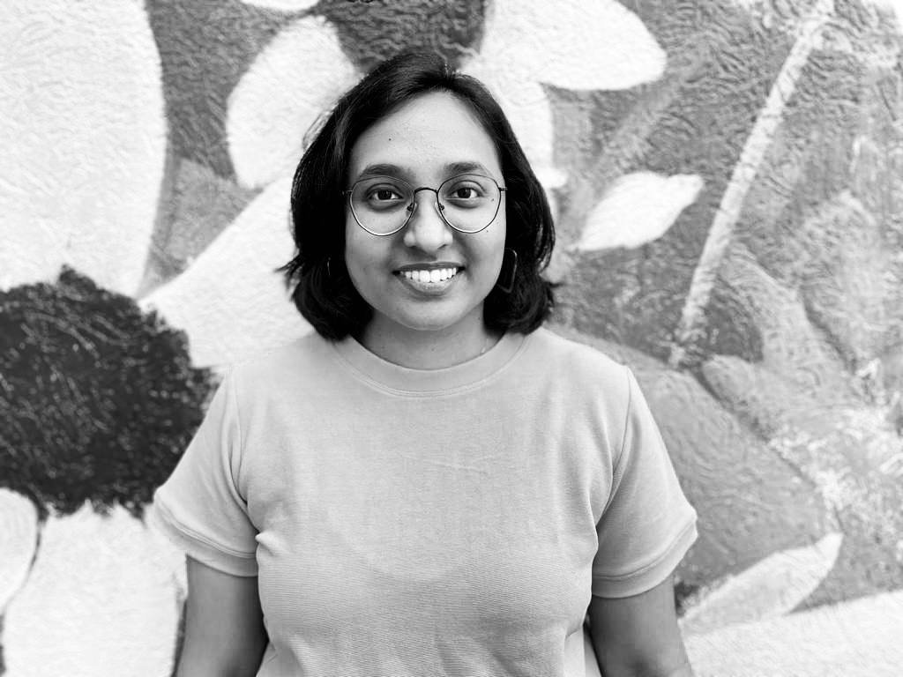

Welcome to my photography blog
About Me

I am a UX Designer from Mumbai, India and I am currently studying in the School of Information at the University of Michigan. I am an amateur photographer who likes working with images, be it taking photos, editing them, playing with the composition and colors. I use a Nikon 3400D camera with 35mm lens. I also use iphone XR camera as well.
I love travelling and trying out new cuisines. Thus, my photos revolve around lanscape pictures and food photography. I also like to click random patterns or objects, that I find inspiring and interesting. To learn more about my work as a UX designer, please visit my portfolio website. Have a good day!!